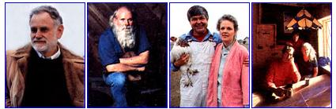
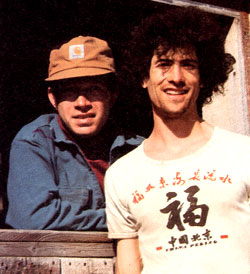
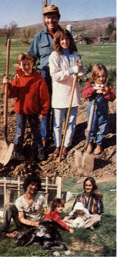

The Rise of New America
Home
How an organic garden produced an unlikely coalition.
Although Philip Foreman and Ted Dobson live just down the road from one another, they didn't speak for years.
"He thought I was an up-scale yuppie snob," recalls Philip, "and I thought he was nothing but an unkempt hippie."
Both live in Columbia County in eastern upstate New York, Philip and his family on weekends (the rest of the time in Manhattan, three hours away), Ted and his family fulltime. The Foremans, Philip and Paula, are both successful advertising executives, while Dobson and his mate, Anne Banks, are successful organic gardeners, selling their produce to a widening network of green markets and restaurants, including more and more in Manhattan.
The domiciles of the two families are as different as their livelihoods. The Foremans' is a renovated nineteenth-century farmstead on 60 acres. With its pond, orchard and outbuildings, it is as traditional and picturesque as a Currier and Ives print. The Dobson-Banks house, by contrast, is neoalternative: an octagonal passive-solar tepee of sorts, with attached greenhouse. The house sits at the foot of a steep, wooded ridge, while the four-acre garden stretches out toward the road from the front door. The rest of their 20 acres is untillable, because it is largely vertical.
"Driving by, I came secretly to admire that-to me-curious raised-bed garden of his," says Foreman. "Of course, some of the conventional, chemically oriented farmers around here did the same. None of them could believe he realized such a large yield from so small a plot."
The families are finally friends, even partners in a way, because the Foremans want ed to return some of their land to cultivation and asked Dobson's advice. He leases eight acres from them now, and one of their barns is currently bulging with tons of squash produced by that acreage.
A student in the '70s in the Gardening Project at the University of California-Santa Cruz when organic gardening guru Alan Chadwick taught there, Dobson is originally an Easterner (Monmouth, N.J.) who has entertained little doubt about his vocation since age 16. He is now 27.
"I always wanted to live on the land and to garden," he says. "For one thing, I discovered early on that the soil and I are . . . well, telepathic. We speak the same language."
The market for organically grown produce, he goes on to explain, has soared through the roof. "Meaning I should probably buy a truck and find more help, more manpower. But that's infrastructure; the business side of gardening. I wrestle with the implications of that all the time. How far to take it."
He halts and wings a pebble toward the road before reaching down for a beer perched on a nearby rock.
"I'd rather stick with the more important aspect of what I do. From the beginning I've nourished an ideal about this kind of life, about renaissance farming. You see, I don't think of myself as just a vegetable vendor, limited to providing nothing more than food, even if it happens to be very good food. That's too anonymous and abstract. Rather, I try to engage in a feedback relationship with the people who eat my food; enter into an act of communion with them, so to speak."
Whether through communion or Dobson's charisma, the Foremans have become converts, to a point.
"When we first bought this place," says Philip, "we looked at it both as a good investment and as a refuge from the city, a weekend place where our kids could frolic without fear, ours and theirs."
Sipping a Scotch, he sits on the back porch that faces westward over the pond and orchards. Technically too old to be a yuppie-he is 37-he nevertheless looks like an antecedent, what used to be called a prepster or preppie. He dresses very well.
"I was raised near here," he resumes, "but closer to West Point where my father taught history. For me, the city represented an alternative to military life, though I must admit I often thought of a business suit and tie as a kind of uniform. Gradually, however," he continues, "the land, the farm and the impact of Dobson's agrarian know-how have brought us to the point where we now question our city ties altogether. I mean even the values that keep us there and that were pumped into us while growing up. I'm an M.B.A. and my wife, Paula, has a Ph.D. in sociology. Achievement oriented, career- and status-conscious, I suppose. But it's wearing thin, partly because the economy is facing troubled times. On the other hand, the en chantment of this way of life grows stronger, more irresistible, each passing day."
Columbia County has recently attracted large numbers of migrants, to the level that Dobson is feeling a little edgy, a little crowded. Whether his instincts lead him eventually to move even farther away, or whether the Foremans finally say "good-by to all that" and take to their farm permanently, remains to be seen. Meanwhile, their friendship, while deeply grounded, also bears a symbolic stamp. Coalition between up-scale and down-scale, between townie and farmer, between the future and the past? Not quite, but something like that.
|
 All fully armed, Philip and Paula stand with their children, Isadora and Jonathan. Above, Ted relaxes with Anne Banks, and their children, Benjamin and Moira. |
 |
 |